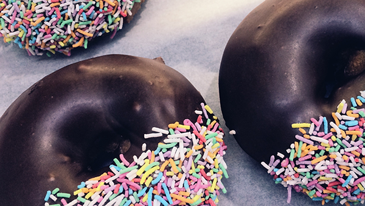

Tooltips can be anchored to elements using their ID
<3 <3 <3
wake up!
halp I am trapped in a tooltip
meow!
Tooltips can be anchored to elements relative to their parent
Tooltips can open in different directions
üëà
üëâ
üëç
üëé
Tooltips can contain rich text (though against the Material Design spec)

Rich-text tooltips are doable but against the Material Design spec.